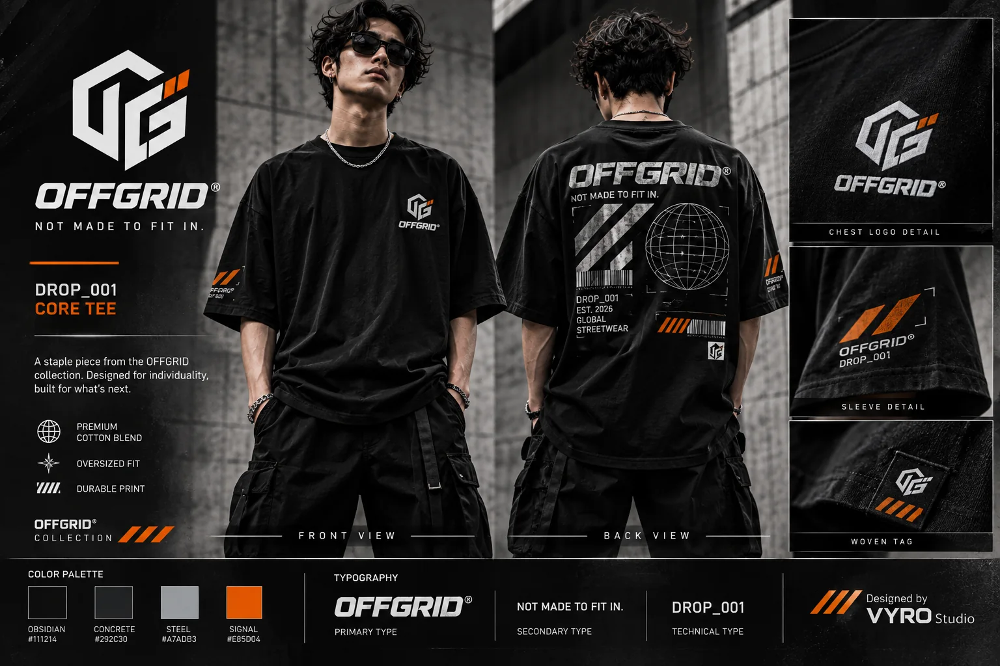

01 / Core Tee
Oversized black tee with chest mark, technical back graphic and sleeve details.

VYRO Studio / Selected work / 001
SELF-INITIATED CONCEPT PROJECT
NOT MADE TO FIT IN.
An underground streetwear identity built around independence, creative expression and an industrial visual language.
01 / The brief
OFFGRID is a fictional streetwear label imagined for an audience drawn to underground music, urban culture and independent style. The creative direction pairs stark typography and technical graphics with a restrained industrial palette.
The goal was to create a flexible identity that could live across garments, packaging, social content and a digital storefront.
This is a self-initiated demonstration project. OFFGRID is not a real client, commissioned brand or operating store.
02 / Visual identity

#111214#292C30#A7ADB3#E85D04The identity uses a bold condensed display style for headlines, a clean sans serif for supporting information and a technical mono style for product codes and labels. The OG symbol and orange slash act as repeatable brand signatures.
03 / Apparel collection
A first collection translated the visual identity into wearable graphics and product applications.


Oversized black tee with chest mark, technical back graphic and sleeve details.
Heavy visual placement and orange utility marks across the garment.
A minimal accessory application using the OG symbol as the primary mark.
04 / Brand applications
05 / Project scope
Product images are AI-assisted visual mockups for concept presentation only. They do not represent manufactured inventory, verified production specifications, a functioning ecommerce website or a completed video advertisement.